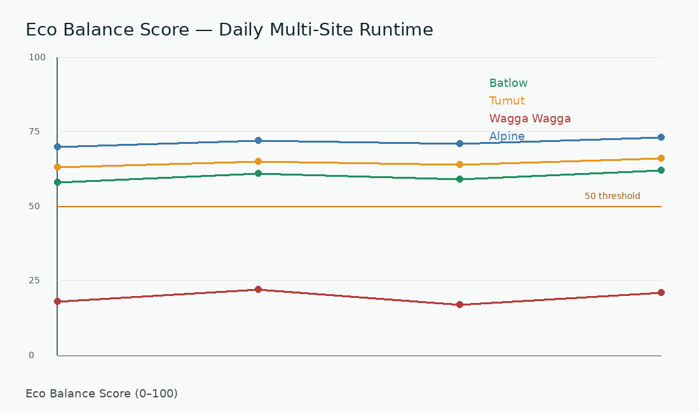

Eco Balance Lifeline
Longitudinal ecological balance movement over time.

Risk Index Chart
Runtime ecological risk observation.

Spatial Ecological Surface
Spatial Eco Balance distribution across active observation sites.

Spatial Runtime Animation
Ecological drift movement through accumulated runtime frames.

Eco Balance Threshold Lens
Move the threshold to explore ecological balance interpretation bands.
Fragile Balance
- 0–20 Severe Arid Risk
- 20–35 Arid Pressure
- 35–50 Semi-Arid Warning
- 50–65 Fragile Balance
- 65–80 Stable Recovery
- 80–100 Strong Ecological Resilience
Runtime Interpretation Prompt
Copy a human-readable interpretation request for reviewing current runtime outputs.
Prompt ready.
Runtime Reports
Open local runtime evidence files for detailed observation.
Alert Summary
Simple observation states for ecological runtime review.
WARNING Semi-arid pressure watch
CRITICAL No critical runtime alert detected
STABLE Recovery signals available for review
No active ecological alerts.
Human Observation Notes
Manual ecological observations for human-in-the-loop runtime interpretation. Notes are not saved in v0.1.